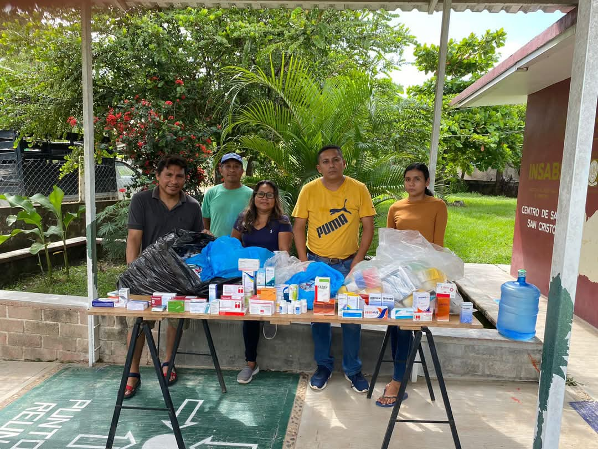

Infraestructura social
La comunidad de san Cristóbal está integrada además de sus elementos individuales, de una iglesia católica, una agencia municipal, centro de salud, escuelas, un quiosco, cuenta con luz eléctrica, pequeñas tiendas de abarrotes, una tienda cona supo, internet y señal Telcel
Población económicamente activa por sector
Sector:
Sector Primario (60-70%)
Sector Secundario (10-15%)
Sector Terciario (15-25%)
Educación
Jardín de Niños Quetzalcóatl: Con clave 20DJNO9120 fundado en enero de 1984.
Escuelas Primaria Rural Estatal “Miguel Hidalgo “: Con clave 20DPR03981 se fundó el 20 de enero de 1950 y cuenta con seis aulas.
Escuela Secundaria Técnica No.88: Con clave 20DSTOOOSR fundado el 9 de 1976.
CECyTE EMSaD No:34 Colegio de Estudios Científicos y Tecnológicos del Estado de Oaxaca: Con clave 20EMS0034B fundado el 28 de noviembre de 2003.
Salud
La comunidad cuenta con un Centro de Salud, donde son atendidos todos los pobladores, ya se para tratar enfermedades comunes como gripa, tos, calentura, etc o
heridas que los trabajadores del campo sufren, cuenta con gran personal médico.

Deporte
Nuestra comunidad cuenta con 4 canchas de basquetbol:
1 en la Escuela Primaria.
2 en Escuela Secundaria Técnica No.88.
1 pública.
Servicios públicos
• Agua potable.
• Centro de Salud.
• Agencia municipal.
• Luz eléctrica.
• Sky.
• Canchas.
Medios de Comunicación
• Internet
• Señal Telcel
• Teléfonos
Vías de Comunicación
La comunidad de San Cristóbal cuenta con caminos rurales existen caminos de terracería que conectan la comunidad con localidades cercanas. En temporada de lluvias, algunos tramos pueden volverse difíciles de transitar.